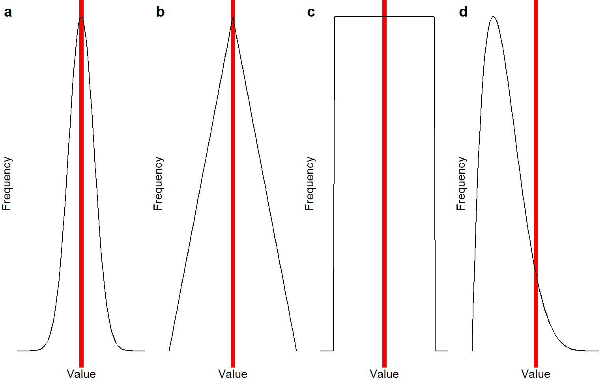
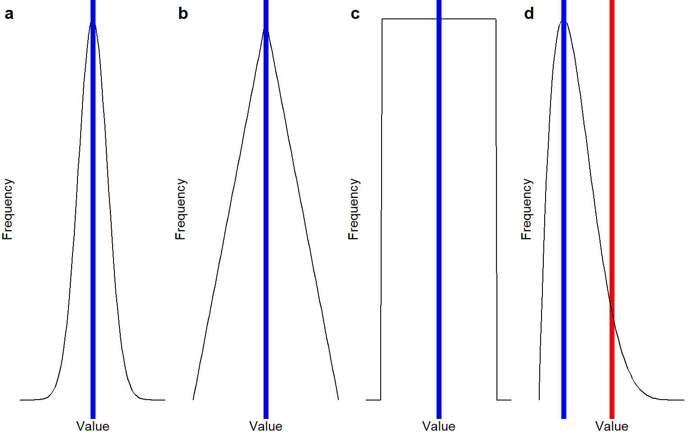
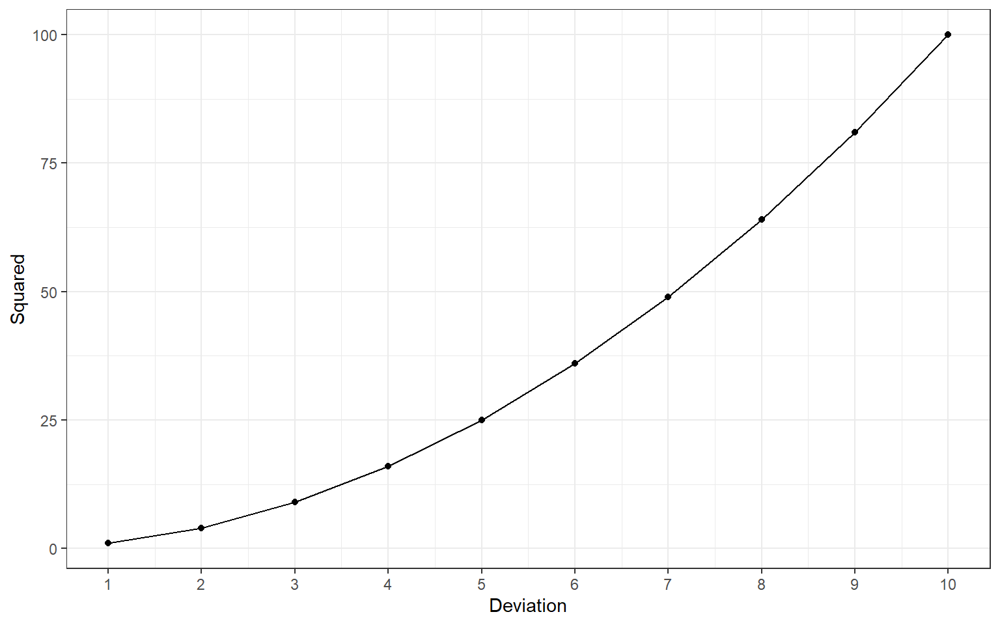
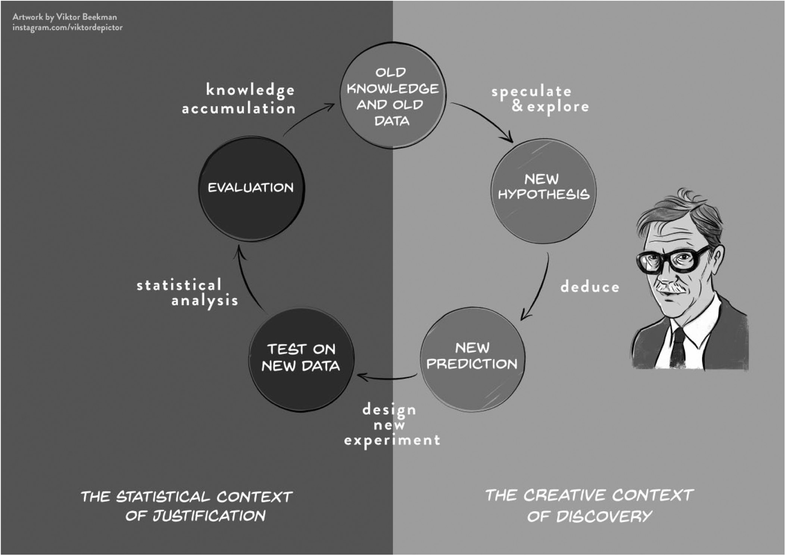

| Sex | Height | Age |
|---|---|---|
| M | 167 | 21 |
| F | 176 | 17 |
| F | 188 | 18 |
| M | 176 | 19 |
| X | 171 | 17 |
2 Descriptive Statistics
Descriptive statistics describe or summarize properties of data collected in a sample. If you collect data on three variables for five participants, you can still print the entire dataset as a table and maintain the overview:
Any time you collect data from more than just a handful of participants, however, this becomes unfeasible. Instead, we report descriptive statistics.
Descriptive statistics are almost always computed when data are collected, for a variety of reasons:
- To describe properties of the sample (e.g., the demographic composition)
- To check for mistakes in data entry; e.g., if the maximum value of the variable
ageis 124, the person who entered the data might have made a mistake - To check assumptions of a particular statistical model, which we will cover in later chapters
- To answer research questions that do not require hypothesis tests, for example:
- In which country are most of our sales conducted?
- What is the most common major in my classroom?
- Based on data collected from all inhabitants of the Netherlands (i.e.: a census, not a sample), what is the average income?
2.1 Measures of Central Tendency
Measures of central tendency are statistics that try to capture the “most common” value in a sample. The most common measure of central tendency is the “average”, which statisticians would call the “mean”. All measures of central tendency summarize the distribution of values of one particular variable as one representative number.
2.1.1 Mean: the “average” value
The most common measure of central tendency is the mean (or average). It is computed by adding all observed scores, and dividing that total by the number of observations.
As a formula, this looks like:
\(\bar{x} = \frac{\sum_{i=1}^{n}x_i}{n} = \frac{x_1 + x_2 + ... + x_n}{n}\)
An advantage of the mean is that every participant’s score contributes to its value equally. This also implies that it is sensitive to extreme values (also called: outliers). If you calculate the mean income in a country where 99% of inhabitants live below the poverty level and 1% are ultra-rich oligarchs, then the mean income will make it look like, on average, people make good money. This sensitivity to extreme values implies that the mean is a good description of the distribution of scores if the distribution is approximately symmetrical (i.e., about 50% of scores are above the mean, and 50% are below it).
Take a look at the figures below; they show different possible distributions of scores in a sample. On the X-axis is the number line. Exact values are not given here because the important point is the shape of the distribution, but you can imagine that the X-axis is a scale of height from 150-210 centimeter, or a self-report questionnaire scale from 1-10. On the Y-axis is the frequency with which each number is reported by the participants; a higher value on this axis means that this response is more common. The red line indicates the location of the mean.
Notice that the distributions labeled a-c are all symmetrical: In distribution a, scores cluster around one common value and quickly drop off when you get further away from that common value. In distribution b, scores also cluster around one common value, but they drop off more gradually. In distribution c, every value is exactly equally common. For distributions a-c, the mean would be a good measure of central tendency - it gives you the middle of the distribution. However, also notice that the mean is a better representation of the “most common” value in distributions a-b, but not in distribution c.

2.1.2 Median: the middle milestone
If you were to order all scores of your variable from lowest to highest, then the median value is the value that splits your sample in half: half of the participants score lower than this value, and half score higher.
Another name for the median is the 50th percentile. The \(n\)th percentile is the score that divides the sample so that \(n\)% of participants score lower. Thus, the 50th percentile means that 50% of participants score lower than the median (and, of course, 50% score higher).
Based on the explanation of the mean, you might already realize that this value should be equal to that of the mean in a perfectly symmetrical distribution. If there are outliers, though, the median is less strongly affected by them than the mean. We can thus say that the median is a measure of central tendency that is more robust to outliers than the mean.
The median is not really “calculated”, but it is found by literally sorting all values in order, and then picking the middle value (if you have an odd number of observations), or calculating the mean of the two middle values (if you have an even number of observations).
If our variable has these values (which are already ordered):
2, 3, 6, 7, 100Then the median value is the middle value, \(Med = 6\). Note that the outlier with value 100 does not really affect it (the mean for this sample is much higher, \(M = 23.6\)).
If our variable has these values (which are already ordered):
1, 2, 3, 6, 7, 100Then the median would be the mean of the middle two values: \((3+6) / 2 = 4.5\).
Below is the picture of the means again, but now, the location of the median is indicated with a blue line. Note that for the symmetrical distributions a-c, the median is identical to the mean - but for the asymmetrical distribution d, the median is a much better representation of the “most common value” than the mean is.

2.1.3 Mode: the most common value
The mode is the most common value in a sample. We can calculate or find it by creating a frequency table, tabulating how often each score is observed in the sample, and then picking the score that occurs most frequently.
While the mode can be obtained for variables with any measurement level, it is the only valid measure of “central tendency” for nominal data (e.g., sex, major, favourite color). The other measures of central tendency are not valid for nominal data, because these lack a numerical value.
Again, note that in a perfectly symmetrical data distribution, the mode will be identical to the mean and the median.
Imagine, for example, that I have students from three majors:
| Major | Frequency |
|---|---|
| Social Science | 43 |
| Cognitive Neuroscience | 22 |
| Business & Economics | 11 |
The mode of the variable major, in this case, is “Social science”. Do you see why we cannot calculate a mean or median for the variable major? Because the majors don’t have a numerical value.
However, it would be perfectly reasonable for me to say that the mode grade obtained last year was a 6.5. This implies that 6.5 was the most common grade, but it doesn’t tell you how many students got that grade, or whether the average grade was above or below the level required to pass.
Visually, the location of the mode is the same as the location of the median in plots a, b, and d in Figure Figure 2.1. Plot c does not have a mode; no score is more common than any other score.
2.2 Choosing a Measure of Central Tendency
Which measure to choose depends, in part, on the measurement level of the variable.
- Nominal: Mode
- Ordinal: Mode; if you calculate the mean or median, that means you assume that the distances between all categories are equal (i.e., you’re treating your ordinal variable as interval).
- Interval/Ratio: Mode (but: it is rare for multiple interval/ratio scores to have identical values, unless they are integer), mean, and median
2.3 Measures of Dispersion
Measures of central tendency tell us what is a typical score; measures of dispersion tell how typical that score is. Dispersion simply means variability, so from now on, we will use this term.
Here are several measures of variability:
2.3.1 Range: full span
The range is the distance from the smallest to the largest value. You calculate it by subtracting the smallest value from the largest; for example, if your smallest value is 1 and the largest is 5, then the range is \(5-1 = 4\).
As a formula, this looks like:
\(R = x_\text{largest} - x_\text{smallest}\)
Sometimes, the range is also reported as an interval, \([1, 5]\), or as minimum and maximum values. The range is an intuitive metric, but it is unstable because its value is fully determined by just two observations (the lowest and highest). The variability of all of the other observations does not affect it.
2.3.2 Sum of Squared Distances to the Mean
A metric of variability that does take all observations into account is the sum of squared distances to the mean - or “sum of squares”.
To calculate it, follow these steps:
- Calculate the mean of all observations, e.g. if our observations are
1,2,3, then \(M = 2\) - For each observation, calculate the distance from that mean (subtract the mean), so for our observations
1,2,3, we get \(1-2 = -1\), \(2-2 = 0\), and \(3-2 = 1\). - Square all these distances to get rid of negative values, so \(-1^2 = 1\), \(0^2 = 0\), \(1^2 = 1\).
- Sum the squared distances, in this case \(1 + 0 + 1 = 2\)
As a formula, this looks like:
\(SS = \sum_{i=1}^{n}(x_i - \bar{x})^2\)
Note that if we would not square the distances, the sum would always be zero because the mean is mathematically in the middle of all scores, so the negative distances of values below the mean exactly cancel out the positive distances of values above the mean.
The sum of squares has several important properties. First, note that its value depends on the sample size: sums of squares of larger samples tend to be larger than those of smaller samples. Second, note that they are not on a very meaningful scale. Without further information, you cannot interpret what it means to say that the sum of squares for the variable age is 6524. Third, note that squaring distances does mean that high deviations become (quadratically) more influential:

2.3.3 Variance: mean squared distance
One way to make the sum of squares more interpretable is to divide it by the number of observations. This tells us how far away each observation is from the sample mean, on average.
Here are three formulas, that all describe the calculation of the variance. The first describes how you calculate the variance from the sum of squares (SS); the second includes the formula for the sum of squares, and the third describes how you calculate it by squaring the raw scores and subtracting a sum of \(n\) times the squared mean of X, \(\mu_{x}\):
\(s^2 = \frac{SS}{n} = \frac{\sum_{i=1}^{n}(x_i - \mu_{x})^2}{n} = \frac{\sum_{i=1}^{n}x_i^2 - n\mu_{x}^2}{n}\)
Note that here, we divide by the sample size \(n\). When using the variance as a descriptive statistic, this is fine.
However, in later lectures, we will use sample statistics to make claims about the population (inferential statistics). Then, it becomes very important to divide by \(n-1\) if the population mean is unknown. The formulas then look like this:
\(s^2 = \frac{SS}{n-1} = \frac{\sum_{i=1}^{n-1}(x_i - \bar{x})^2}{n-1} = \frac{\sum_{i=1}^{n}x_i^2 - n\bar{x}^2}{n-1}\)
The consequence of dividing by \(n-1\) is that we get a slightly higher value for the variance. We do this to account for the fact that we don’t know the exact value of the population mean; we estimated it from the sample. If we just assume that the sample mean is a perfect representation of the population mean, we will systematically under-estimate the variance. By dividing by \(n-1\), we get a slightly larger variance estimate, adjusted for our uncertainty about the value of the population mean.
2.3.4 Standard Deviation
One disadvantage of the variance is that it is still on the squared scale we obtained by squaring the distances. So, if your variable measures age in years, than the variance of age is expressed in years squared.
To restore the variance to the original units of the variable, we can simply take the square root. So if our variables are measured in euros, centimeters, and milliseconds - then the variances will be expressed in euros\(^2\), centimeters\(^2\), and milliseconds\(^2\). Taking the square root restores the original units; we call the resulting statistic the standard deviation.
You can think of the standard deviation as the average deviation between individual scores and the sample mean. Why don’t we just call it the “average deviation” then? Because that would be mathematically inaccurate - when we squared the deviations before taking the average, we allowed larger deviations to have a disproportionately larger impact on the value of the variance. Taking the square root of the end result, the variance, does not cancel out that disproportionate influence of large deviations.
So, intuitively it is fine to think of the standard deviation as the “average” deviation, as long as you’re aware that mathematically, this is not exactly correct, because an average value should assign equal weight to each observation, whereas the standard deviation assigns greater weight to extreme observations.
Imagine I tell you that, in one class, the average grade is a 5, with a standard deviation of .5. You would know that most students scored close to a 5, and many of them failed the course. If I told you that the average grade is 5 with a standard deviation of 2, you would know that scores are much more spread out, and a large portion of the students must have passed the course as well.
2.4 Effects of Transformations & Outliers
| Transformation | The mean… | The SD… |
|---|---|---|
| Add / subtract constant | Shifts by that constant | Doesn’t change |
| Multiply / divide by constant | Scales by that factor | Scales by that factor |
| Inject one extreme score | Pulls center toward outlier | Increases |
Example: Changing units (e.g., converting centimeters to inches) would rescale both the mean and SD.
2.5 Why Descriptives Matter
-
Data cleaning: Outliers leap out when you know the usual range.
-
Analysis choices: Skewed or heavy-tailed distributions may call for robust or non-parametric methods.
-
Transparency: Readers can judge your results only if they see the data’s headline features.
- Communication: “Participants averaged 8.9 hours of screen time per day (SD = 1 hr)” paints an instant picture.
2.6 Descriptive VS Inferential Statistics
Descriptive statistics describe sample properties, while inferential statistics (which are covered in later chapters) give us a best guess for the corresponding population parameter. It is important to realize that some descriptive statistics are calculated in the same way, or very similar, as inferential statistics. The distinctive feature of descriptive statistics is how they are used: use them to describe the data observed in a sample, and not to make claims about the larger population.
2.7 Context of Discovery VS Justification

In the first chapter, we described De Groot’s empirical cycle as a model of cumulative knowledge acquisition through scientific research. A crucial assumption of this cycle, highlighted by Wagenmakers and colleagues (see Figure 2.2), is the distinction between the context of discovery and the context of justification. The context of discovery is exploratory: we peruse data, looking for interesting patterns that might spark a new hypothesis. The context of justification is confirmatory: we test a theory-driven hypothesis. In order to obtain an unbiased test of a hypothesis, the hypothesis cannot be shaped by prior exploration of the data. If we first observe an interesting pattern in data (exploratory), and then conduct a test of that pattern (confirmatory), the test is more likely to confirm the pattern. There are legitimate ways to explore data looking for interesting patterns, and machine learning can be a helpful tool in this search (Van Lissa, 2022a). However, be careful of any cross-contamination between exploration and confirmation. Any pattern observed during exploration can introduce bias in subsequent confirmatory tests (Hoijtink et al., 2023).
Very often, the first thing researchers do when collecting or accessing a dataset is to engage in exploratory data analysis (EDA): visualizing and summarizing the data to detect errors, spot patterns, and generate new ideas or research questions. EDA was popularized by John Tukey, and it often involves histograms, boxplots, and scatterplots that reveal outliers or interesting trends worth modeling.
There is one important caveat to this common practice, namely that it introduces a potential risk of cross-contamination between exploration and confirmation. Observing the descriptive statistics may influence other downstream analysis decisions. This is not a problem when conducting purely exploratory analyses, and it is also not a problem if any confirmatory analyses have already been preregistered. Preregistration means that the analysis plans have been published in a time-stamped archive before collecting or accessing the data, so it’s possible for others to check whether the reported analyses were executed as planned (Peikert et al., 2023), with changes made after seeing the descriptive analyses. In all other cases: be mindful of the risk of introducing bias. For an example of how preregistered hypothesis tests can be combined with rigorous exploration using machine learning, see Van Lissa (2022b).
3 Lecture
TO DO
4 Formative Test
A formative test helps you gauge how well you’ve grasped the ideas and calculations from Chapter 2 – Descriptive Statistics. Try the quiz after working through the lecture slides but before our live meeting, so we can focus on any topics that still feel wobbly. If you miss a question you’ll see a hint that points you back to the relevant slide or worked example.
Question 1
Which measure of central tendency is robust against extreme outliers?Question 2
For purely nominal data (e.g., eye color), the only valid measure of central tendency is the:Question 3
The range summarises spread by using:Question 4
Squaring deviations when computing variance ensures that:Question 5
Adding a constant (e.g., +5) to every score will:Question 6
Multiplying every score by 3 will:Question 7
The “degrees of freedom” for the sample variance (n-1) reflect that:Question 8
When a distribution is strongly right-skewed (e.g., income), which measure of central tendency best represents a typical observation?Question 9
A distribution with two distinct peaks is called:Question 10
Reporting the standard deviation alongside the mean helps readers understand:Question 1
The median depends only on rank order; extreme values cannot pull it up or down.
Question 2
Nominal categories lack numerical distance, so the most frequent category (mode) is the only appropriate centre.
Question 3
Range is computed as X_max and X_min, relying solely on the two extreme scores.
Question 4
Squares turn all deviations positive, preventing positive and negative differences from cancelling out.
Question 5
A constant shift moves the centre but does not change the spread of scores.
Question 6
Scaling stretches both centre and dispersion by the same factor.
Question 7
After fixing the sample mean, only n-1 unique pieces of information remain.
Question 8
The median is unaffected by the long tail of extreme high values.
Question 9
Two modes (peaks) indicate a bimodal distribution.
Question 10
SD converts variance back to original units, expressing average distance from the mean.
5 Tutorial
5.1 Descriptive Statistics
5.1.1 Step 1
As explained before, the first step in any statistical analysis involves inspection of the data. In the previous assignment we looked at graphical summaries.
This assignment shows you how to explore data using descriptive statistics—values such as the mean, standard deviation, maximum, and minimum.
Use the data file stressLAS.sav, as in the previous chapter.
5.1.2 Step 2 – Descriptives for Key Variables
We will first examine the descriptive statistics for Optimism, Life Satisfaction, and Negative Emotions.
Compute descriptive statistics as follows:
-
Analyze > Descriptive Statistics > Descriptives
- Select Optimism, Life Satisfaction, Negative Emotions
- Click OK
SPSS opens a new Output window with a table of descriptives for the selected variables.
5.1.3 Step 3 – Frequency Tables
In the previous step we computed the average value and standard deviations. However, for nominal and ordinal variables, the average value is meaningless. To explore nominal and ordinal variables we may produce frequency tables. A frequency table shows the observed percentage for each level of the variable.
Generate frequencies for Smoke and Relation:
-
Analyze > Descriptive Statistics > Frequencies
- Select Smoke and Relation
- Click OK
SPSS now adds a table with the frequency distributions of the selected variables to the output file.
Note: SPSS reports Percent and Valid Percent. These differ only when missing values are present (none in this dataset).
5.1.3.1 Extra – Spotting Multimodality
Sometimes a single mean or median masks sub-groups.
-
Graphs > Legacy Dialogs > Histogram
- Choose Life Satisfaction for Variable and click OK
If you notice two peaks, color the bars by Relation (single vs. relationship):
-
Graphs > Chart Builder
- Drag Histogram onto the canvas
- Place Life Satisfaction on the x-axis
- Drag Relation into Cluster on X
- Click OK
Take-away: multiple modes often reveal hidden clusters that may need separate analysis.
5.2 Quiz 1 – Basic Descriptives
How many participants are in the sample?
What is the mean value of Optimism?
For which of the variables is the spread in the scores highest?
The minimum and maximum observed scores for Negative Emotions were: [, ].
What percentage of participants is a non-smoker?
What percentage of participants is in a relationship?
5.2.1 Weighted Mean
Suppose Class A (n = 12, mean = 6) and Class B (n = 8, mean = 7) are merged.
SPSS effectively multiplies each mean by its n, sums those products, and divides by the total 20 students, yielding 6.4.
Quick SPSS route
- Merge the two files if separate (Data > Merge Files).
- Run Analyze > Descriptive Statistics > Descriptives on the combined score column.
5.2.2 Step 4 – Finding Erroneous Values
One reason to inspect descriptives first is to spot erroneous values (e.g., age 511 instead of 51).
Use the descriptives to find any out-of-range values, then:
-
Data > Sort Cases
- Sort the suspect variable ascending or descending
- Delete rows with invalid values
At this stage we remove entire cases; later you’ll learn gentler missing-data techniques.
5.2.3 Step 5 – Group Comparison with Split File
Research question: “Are non-smokers more satisfied with life than smokers?”
-
Data > Split File > Compare Groups → choose Smoke
- Run Analyze > Descriptives on Life Satisfaction
SPSS now outputs separate means for smokers and non-smokers.
5.3 Quiz 2 – Group Means
Was there an erroneous value in the data file? Enter it here:
If you delete that value, how will the mean change?
If you delete that value, how will the standard deviation change?
Who is more satisfied in this sample?
Does this difference necessarily hold in the population?
5.3.1 Step 6 – Quick Check: How Recoding Affects Spread
Add 10 points to every Life-Satisfaction score:
-
Transform > Compute Variable
- Target variable:
SATIS_plus10
- Numeric expression:
SATIS + 10→ OK
Run Descriptives on both variables:
- Mean shifts up by 10
- SD is unchanged
Multiply by 3 (expression SATIS * 3):
- Mean × 3
- SD × 3
5.4 More Descriptive Statistics
Describing the data is an essential first step in any research context.
5.4.1 Central Tendency by Hand
Grades: 6 3 4 6 7 6 8 9 10 9
Compute mean, median, mode by hand.
- Mode = most common value
- Median = middle value (or midpoint)
- Mean = sum / n
5.4.1.1 Quiz 3 – Hand Computation
Mean
Median
Mode
5.4.2 Variation by Hand
Grades: 2 7 6 7 8 9
Compute variance and standard deviation.
Variance = average squared distance from mean
SD = √ variance
Why divide by n – 1?
After the mean is fixed, only n – 1 deviations are free to vary, so dividing by n – 1 keeps the sample variance unbiased.
5.4.2.1 Quiz 4 – Hand Computation
Variance
Standard Deviation
5.4.3 Verifying in SPSS
Enter the six grades, name the variable, then:
-
Analyze > Descriptive Statistics > Descriptives
- Options… > Variance → Continue > OK
Confirm SPSS matches your hand calculations.